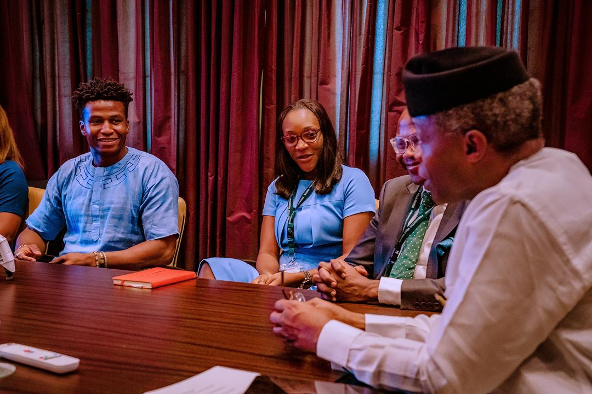

Nigerian VP meets a Robotic Engineer
Silas Adekunle met with the vice president of Nigeria, Yemi Osinbajo at the presidential villa on Monday, 18th of November.
Silas Adekunle is a young Nigerian Inventor and technology entrepreneur, is known for creating the world’s first intelligent gaming robot along with his team made a presentation to the VP.
Silas Adekunle is the co-founder of Reach Robotics, an augmented reality gaming company that creates robots for gaming and for STEM education. Adekunle has partnered with Apple, signing an exclusive distribution deal to sell his product in both the United States and Britain. Reach Robotics shut down on Sept. 2, 2019.
In November 2018, he was named to the Financial Times' list of the 'Top 100 minority ethnic leaders in technology.'
